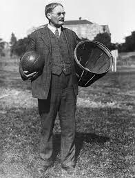

On August 3, 1949, after a damaging three-year battle to win both players and fans, the rival Basketball Association of America (BAA) and National Basketball League (NBL) merge to form the National Basketball Association (NBA).
The BAA incorporated in 1946, challenging the hegemony of the nine-year old NBL. The BAA established itself in bigger cities than the NBL, which existed only in small Midwestern cities like Fort Wayne, Sheboygan and Akron. While the NBL held its games in small gymnasiums, the upstart BAA played its games in large major-market arenas such as the Boston Garden and New York City’s Madison Square Garden. By the 1948-49 season, the BAA had begun to attract some of the country’s best players, and four NBL franchises—Fort Wayne, Indianapolis, Minneapolis and Rochester—moved to the BAA, bringing their star players with them. George Mikan, the biggest attraction in either league who by himself could virtually assure a team’s success, defected to the new league with the Minneapolis Lakers.
On August 3, 1949, representatives from the two leagues met at the BAA offices in New York’s Empire State Building to finalize the merger. Maurice Podoloff, head of the BAA since its inception, was elected head of the new league. The new NBA was made up of 17 teams that represented both small towns and large cities across the country. Through the 1950s, though, the number of teams dwindled, along with fan support, and by the 1954-55 season, only eight teams remained. That year, the league transformed the game with the creation of the 24-second clock, making play faster-paced and more fun to watch. Fans returned, and the league, now financially solvent, expanded throughout the 1960s and '70s. Today, the NBA attracts players—and millions of fans—from countries around the world.

why is NBA the biggest league
The National Basketball Association (NBA) is the second biggest sports competition by media rights value in its domestic market, where it currently earns US$2.7 billion per season from its national broadcast partners, ESPN and Warner Bros Discovery.
While the US is where the vast majority of the NBA’s broadcast revenue is generated, the basketball competition performs far better internationally than the National Football League (NFL) and Major League Baseball (MLB), earning US$715 million annually from its non-US media rights agreements, equal to 21 per cent of its total media rights value (excluding revenue generated from NBA League Pass and RSN rights fees).
This is owed in large part to the global popularity of basketball: excluding the US, the sport ranks fourth most popular globally, behind only soccer, the Olympics and tennis, and far ahead of American football, which ranks 12th.
The NBA typically attracts a younger audience compared to the average sports fan. While 40 per cent of all US sports fans surveyed by Ampere in Q4 2022 followed the NBA (ranked second highest), the league is the most-followed competition among the 18 to 34 age range at 43 per cent, usurping the NFL, which drops from 44 per cent to 38 per cent with the same demographic.
The NBA is also enjoyed by younger audiences outside of the US , with 26 per cent of sports fans aged 18 to 34 following the league, ranking fifth in total and first outside of soccer competitions.
The NBA is in fact the most popular basketball event even outside the US, where individual franchises within the league have also attained considerable fanbases. According to Ampere’s Q4 2022 survey, the LA Lakers are the most-followed basketball team, both in the US, where 41 per cent of basketball fans follow the franchise, and internationally, where 58 per cent follow.
Across the five international markets surveyed by Ampere with a significant basketball following – Brazil, Spain, China, Indonesia, USA and the UK – only two sports teams exceed the popularity of the LA Lakers: Real Madrid and FC Barcelona.
Across the 12 countries surveyed by Ampere in Q4 2023, 10.6 per cent of sports fans ranked the NBA in their top three sports competitions, the fourth highest overall, and 6.4 per cent rank it as their favourite competition, ranking third highest after the Premier League and the Fifa World Cup. Those who rank the NBA in their top three competitions are also more than twice as likely to subscribe to the NBA League Pass streaming platform than the average sports fan.
Despite some distance in value from the NFL, the most valuable sports competition in the US, the NBA still generates significant media rights value domestically, and exceeds all other US leagues in the international market. Coupled with a younger audience and domestic rights deals expiring in 2025, there is strong growth potential for the world’s most popular basketball competition.
Ampere Analysis is a data and analytics partner of SportsPro’s commercial guides, which provide SportsPro+ premium members with a one-stop shop to access the latest commercial activity and contract terms for many of the leading sports properties. Access every guide here or sign up for SportsPro+ today.
Analysis
Basketball, Broadcast & OTT, Global, Media Rights, North America
how to join NBA
Practice shooting from everywhere on the court. Practice shooting at close range, longer range and then 3-point range so you become a dexterous, well-rounded shooter. It can help to work on your shooting ability in continuous three-week rotations, spending one week working on each type of shot. You can never be too precise.
Try to maintain a strong shooting average: At least 60% average from the 2-point field goal, 40% from 3-point line and 75% from free throw line.[1]
Step 2 Record video of yourself playing in basketball games.
2 <
Record video of yourself playing in basketball games. Watching your body move when you make good baskets and when you miss can help you tweak things that are off and improve your game. If you’re in middle or high school, have a friend or parent attend a game to help you record some video footage. If you’re in college, many teams have media assistants who record games for the university. Ask your coach if you can review some game footage.
It can be helpful to compile your best footage from these games into a highlight reel for potential NBA recruiters, if you are in college. Edit the video to keep lagging moments to a minimum and keep your video under 5 minutes.[2]
Step 3 Play with people who are better than you are.
3
Play with people who are better than you are. You become a stronger and more strategic basketball player when you are challenged by someone whose skills are superior to yours. Elevate your game by regularly scrimmaging other players who push you to be better. If you are in high school and are already the best basketball player you know, try to join a local AAU (Amateur Athletic Union) team to find people whose playing ability really pushes you to a new level.
Top AAU teams are tracked by prominent college recruiters and are one of the top ways to get athletic scholarships. These regional teams attract top players from many high schools, so recruiters like to visit them to see a bigger pool of talented kids. Dwight Howard, Kobe Bryant and Josh Smith, for example, all grew up playing AAU basketball. You can find an AAU club in your area at aausports.org.
Step 4 Amp up the difficulty of your drills.
4
Amp up the difficulty of your drills. Add some intensity to normal running and practice drills by increasing their difficulty. You could try running in sand or dribbling in gravel. Doing this will make your skills sharper and increase your endurance. You can do this whether you’re in middle school, high school or college.
Create a plan of what you're going to do each day to help you become a better player.[3]
Step 5 Start a strength-training regimen to build muscle.
5
Start a strength-training regimen to build muscle. Increasing your physical strength will enable you to make shots from farther away and muscle around people who guard you. Start a strength-training regimen with a coach who has an understanding of basketball. They can tailor your exercises to your body and your sport’s specific needs.[4]
If you are in high school, contact your school’s athletic director and ask if they can connect you with a lifting coach who has basketball experience.
If you are in college, your school likely already has strength-training experts on staff. Contact your athletic administrator to see if you can book some one-on-one sessions with a personal trainer.
Step 6 Increase your endurance by implementing healthy habits.
6
Increase your endurance by implementing healthy habits. Basketball requires lots of running up and down the court, so it is imperative to maintain your physical condition so you can play your best from the beginning of the game to the end. Staying well hydrated, getting 8 hours of sleep a night, and eating healthy foods will all help your body function optimally and increase your endurance.[5]
Part 2
Standing Out From the Crowd
Download Article
Step 1 Find the right coach.
1
Find the
Play as many tournaments as possible. Getting in front of talent scouts from major universities (if you are in high school) and NBA teams (if you are in college) are key to advancing in your basketball career. Attend as many tournaments as possible, as these are places important coaches and influencers go to see and select the next generation of players. The more influential people who see you play the better.[8]